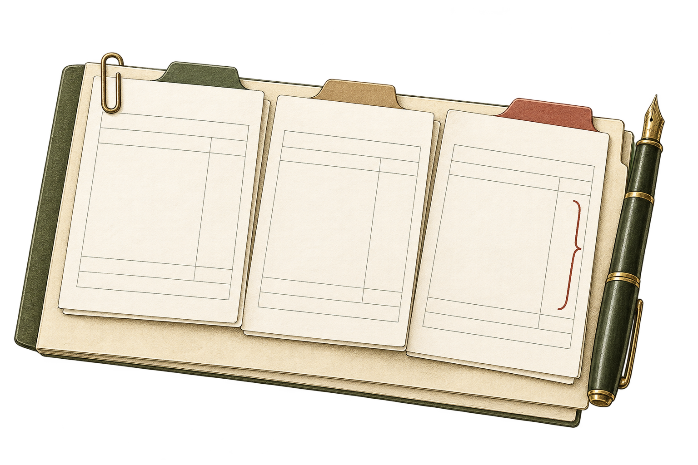

Brand system / 1.0Warm Ledger · Record Clasp
An identity with a clear paper trail.
A considered visual system for MatchDocket. Editorial warmth, exact evidence, and a little movement with a purpose.

The visual principle
One record. Source evidence. An explicit human decision.